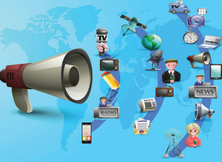
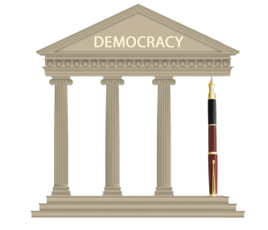
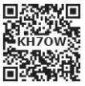
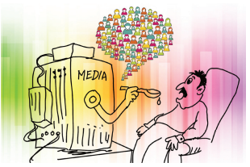
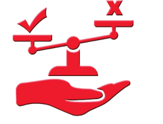
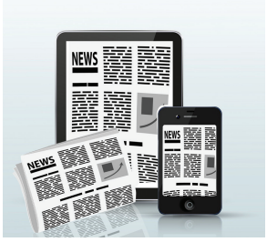
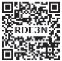

Learning Objectives
Understand media and its classification
Analyse the role of media in facilitating interaction between the government and citizen
Know the ethic and responsibility of media
Gain a critical sense of the impact of media on people’s lives and choices.
Let noble thoughts come to us from every side
Traditionally, India has many folk form of communicating with people in rural areas. Harikatha, and koothu are originally a religious media from in which the stories were propagated. It is a collective form of music, dance, speech, storytelling with comic interludes. It has tremendous effect in communicating the messages straight into the hearts of the people. Then socially relevant messages were passed through this medium. Modern methods to address small and medium gatherings include seminars, dramas, public meetings and workshops etcetera. Print media has been referred to as Peoples University because they perform the role of public informer, educate and custodian of public interest. Let us discuss about Media and its role.
What is Media?
Every individual person is a medium of expression. An individual interacts through the media to reach other individual and institutions. Media is generally the agency for inter-personal communication. Media includes every broadcasting and narrowcasting medium. Media is the plural of the word medium. Such a medium or media allows to communicate messages, thoughts, ideas, views, excetra.
Classification of Media, box message begins
Narrowcast Media |
Cable Television, Direct mail, Seminar |
Broadcast Media |
Films, Television, Radio |
Print Media |
Newspapers, Magazine, Journals, Books, Posters, Reports |
Web Media |
Google website and Blogs |
Social Media |
Twitter, Facebook, WhatsApp and Instagram
|
Box message ends.
This communication can be classified into
Personal communication , these are meant for personal use, like letters, telephone, cell phone, E-mail and fax.
Mass communication , these are used for communicating with the masses. Newspapers, Radio, TV, Collectively they are termed as media.
Printing press was invented by Johannes Gutenberg in 1453
Box item End
Fourth Pillar of Democracy

The four pillars of democracy are Legislature, Executive, Judiciary, and Media. Media ensures the transparency in the working of all the above three systems. This fourth pillar of democracy ensures that all people living in far off areas of country are aware of what’s happening in rest of the country. In fact, mass media is the most important vehicle for information, knowledge and communication in a democratic polity.

Media is very powerful entity on the earth. It is a mirror which shows various social, political and economic activities around us. People depend on the media for various needs including entertainment and information. Media keeps the people awakened and it has become one of the major instruments of social change. Media not only bring out the day to day happenings in the world, but also exposes the strength and weakness of the government. It also advertises the various products produced by the private companies. It creates the awareness. All the TV channels broadcasts national and international news. Social problems are portrayed in many cinemas. Media provide a balanced report on any matters. It fights against the socio political evils and injustice in our society while bringing empowerment to the masses and facilitating development .
All India Radio (A I R) Officially known as Akashvani since 1956 (voice from the sky) is the radio broadcaster of the Government of India launched in 1936.
BOX ITEM ENDS
The media plays a prominent role in the formation of public opinion (general opinion of the public on particular issue). It is the powerful tool in contemporary times. It has become a part of the everyday life of the people. They play a significant role in shaping a person’s understanding and perception about the events occurred in our daily lives. The mass media play a significant role in providing honest, intelligent and usually unbiased accounts of events. The newspaper reflects the response of the people to the government policies. Thus print media and electronic media helps the people to express their opinion on important social issues.

Ethics is a code of values which govern our lives. So they are very essential for moral and healthy life. In the context of media ethics may be described as a set of moral principles. The media is expected to follow a code of conduct which should be reflected in their reporting and writing. Sensational and distorted news should be avoided.

The fundamental objectives of media are to serve the people with news, views, comments and information on matters of public interest in a fair, accurate, unbiased and decent manner and language. An awakened and free media is very much essential for the function of the government. It has right to collect information from any primary authentic sources which are important to the society and then report the same with the aim to inform not to create sensation. The media has a massive responsibility in providing factual coverage.
Media is the back bone of democracy. In our democratic society mass media is the driving force of public opinion. Media strengthens the democratic value. It enlightens and empowers the people. It can educate the voters and ensures that government is transparent and accountable. Media carry every report of action of administration of the government. Based on the information, the citizen can learn about the functioning of the government and day to day happenings taking place around them.
Theory of Democracy
Democracy means rule by the people. It combines two Greek words. Demos refers to citizen. Kratos means either power or rule.
It arranges the debate on current affairs so that we can get the different views for the same issue. Media reminds the government of its unfulfilled promises to the public. It educates masses in rural areas. Parliamentary democracy can flourish only under the watchful eyes of media. Media not only reports but acts as a bridge between the state and public. Thus the media acts as a watch day of the democratic government. A democracy without media is like vehicle without wheel.

Usually the media reports the news which of national and global importance where as local media addresses public locality.
Box item Begins
Name some local media of your locality.
Box item Ends
The media, in the contemporary world of information and technology plays a very significant role in educating masses. The media should always keep in mind, that it should not publish anything which corrupts the public mind and disturbs social peace. For healthy society sharing of views, free flow of information, free communication and expression plays a crucial role. Media, being powerful and important instruments of expression have got lot to contribute. Mass media have made the world smaller and closer.
A medium is a means or way of communication; media is the plural of medium.
Modern media such as TV, radio, newspaper, and the internet reach millions of people all over the world. So the common term used for them is mass media.
Changing technology helps media to reach more people.
Media has brought the world closer to us. It brings the news and happenings from across the world to the public in a fair and realistic way.
In a democracy, the media plays a very important role in providing news.
It is working out to be an effective tool to create public opinion on issues by improving awareness among the masses.
1 |
Broadcast |
transmit by radio or television |
ஒளிபரப்பு |
2 |
Polity |
system of government |
ஆட்சி அமைப்பு |
3 |
Contemporary |
present day |
சமகாலத்தில் |
4 |
Ethics |
moral principles |
நெறிமுறைகள் |
5 |
Unbiased |
impartial |
நடுநிலையான |
6 |
Authentic |
genuine/original |
உண்மையான |

1. Which one of the following comes under print media ?
a. Radio
b. Television
c. Newspaper
d. Internet
2. Which one of the following is the broadcast media ?
a. Magazines
b. Journals
c. Newspaper
d. Radio
3. Which invention has brought the world closure ?
a. Typewriter
b. Television
c. Telex
d. none of these
4. Which is mass media ?
a. Radio
b. Television
c. Both a & b
d. None of these
5. why is it necessary for media to be independent ?
a. to earn money
b. to encourage company
c. to write balanced report
d. none of these
1. DASH have made the world smaller and closer.
2. Every individual person is a medium of DASH .
3. Printing press was invented by DASH .
4. DASH is a code of values which govern our lives.
5. DASH is the radio broadcast of the Government of India.
Narrowcast media |
films |
Social media |
posters |
Print media |
seminar |
Web media |
google web site |
Broadcast media |
Roman letter 4 . Consider the following statements: Tick the appropriate answer
1. Assertion, Print media has been referred to as peoples University
Reason, They perform the role of public informer, educate, custodian of public interest.
a. Assertion is correct and Reason is the correct explanation of Assertion
b. Assertion is correct and Reason is not the correct explanation of Assertion
c. Assertion is wrong and Reason is Correct
d. Both are wrong
2. Find the odd one
a. newspapers
b. magazine
c. journals
d. twitter
e. posters
3. consider the following statements and choose the correct answer form the codes given below.
a. Media is generally the agency for interpersonal communication.
b. Media is very powerful entity on the earth.
c. Media plays a prominent role in the formation of public opinion.
d. Media does not have any responsibility
1 . a, b and c are correct
2 . a, c and d are correct
3 . b, c and d are correct
4 . a, b and d are correct
1. What is media ?
2 . How does the public get the news about the decision that are taken in the Legislative Assembly ? 3 . What are the importance of local media ?
4. Media is the fourth pillar of democracy. Justify
5. State any two responsibility of media
1 . How can we classify media?
2. In what ways does the media play an important role in a democracy?
3. What are the advantages of media?
1. Is Media necessary? Why?
2. What do you know about the term press conference?
3. In what ways media affects our daily lives?
4. Media is a boon or bane.
1. Focus on a particular news. Collect information about that news from various media. Compare and write down the similarity and differences
2. Prepare an album , ‘the growth of media’ (from early period to till now).
3. Prepare a newspaper and circulate in your class.